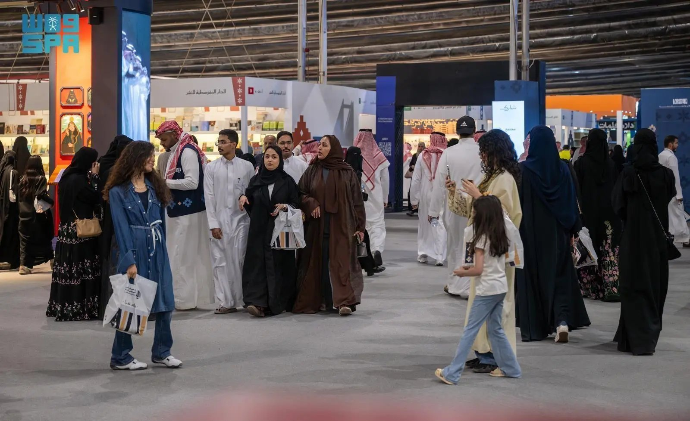
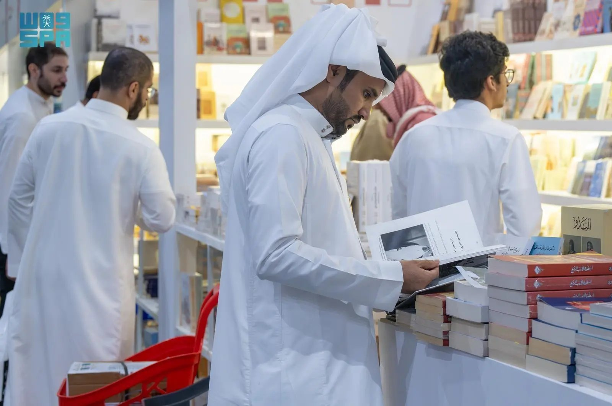
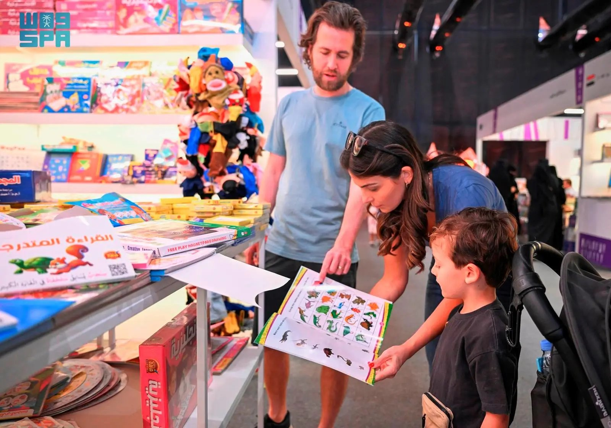
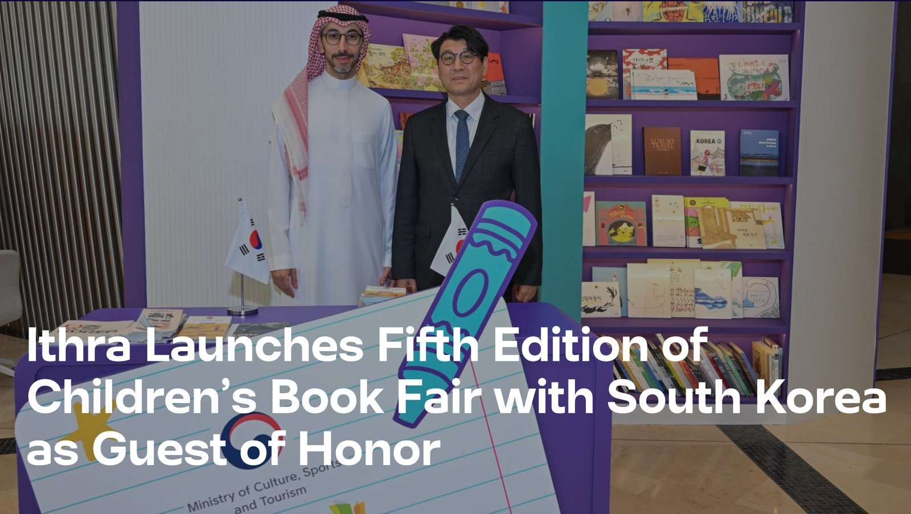
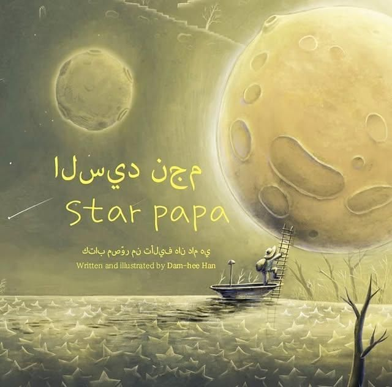

지난 10월 2일부터 11일까지 열린 리야드 국제도서전(Riyadh International Book Fair; RIBF)은 사우디아라비아 문화부 산하 문학·출판·번역위원회(Literature, Publishing & Translation Commission; LPTC)가 주관하는 10일간의 문화 행사다. 사우디 최대 규모의 문학 축제 중 하나로 전 세계의 출판사·작가·독자가 한자리에 모이며, 해마다 주빈국을 선정해 세미나와 강연, 다양한 프로그램을 통해 해당 국가의 문학과 선구적 인물을 조명한다.



▲ 2025년 리야드 국제도서전 현장 — 출처: SPA(Saudi Press Agency)
우즈베키스탄 주빈국, 2,000여 출판사 참여
2025년 리야드 국제도서전은 우즈베키스탄을 주빈국으로 초청해 25개국 2,000여 출판사가 참가했다. 행사장은 프린세스 누라 빈트 압둘라흐만 대학교(PNU) 캠퍼스에 마련됐고, 전시·판매를 넘어 작가 사인회, 지식·문화 서비스 파빌리온, 할인 도서관, 출판사가 없는 작가 쇼케이스 등 폭넓은 프로그램을 운영했다. 또한 세미나·강연·워크숍, 연극·영화 상영, 시 낭송회, 어린이 전용 프로그램, '올해의 문화 인물' 시상, 업계 네트워킹을 위한 비즈니스 공간까지 갖춰 출판 생태계를 입체적으로 연결했다.
번역 신뢰와 원전 접근 강화, 테크 부상
영국·인도·프랑스·벨기에·일본·중국·미국·한국 등 다국적 관람객이 운집해 아랍권 대형 국제도서 행사로서의 위상을 확인했다. 해외 관람객들은 동시대 사우디 소설의 지적 대담성과 인간적 깊이, 그리고 고품질 번역을 강점으로 꼽았다. 한국 관람객은 합리적인 가격의 아랍어 원전을 직접 접할 수 있는 점 즉, '1차 자료 접근성'을 높이 평가했다. 아울러 프로그램과 관람 추이에서는 문학과 지식·테크 콘텐츠(AI·재생에너지 등)가 쌍축으로 소비되는 흐름이 두드러졌다.
서울-다란-리야드로 이어진 2025년 한국-사우디아라비아 교류
6월 서울 코엑스에서 열린 서울국제도서전에서 사우디아라비아는 공식 파빌리온을 운영했다. 킹 압둘아지즈 공공도서관(KAPL), 킹 파드 국립도서관(KFNL), 사우디 출판협회, 킹 살만 세계아랍어아카데미(KSGAAL), 프린스 사탐 빈 압둘아지즈 대학교(PSAU), 나세르(Nasher) 등 주요 기관이 동참해 번역·언어 협력과 업계 미팅을 확대했다. 이어서 7월에는 사우디 다란(Dhahran)에서 열린 이쓰라(Ithra) 제5회 어린이도서전에 한국이 주빈국으로 초청돼 한국 아동문학 전시와 참여형 프로그램을 선보였다. 특히 한담희 작가의 『별 아저씨(Star Papa)』 아랍어판이 현장에서 소개되며 4세~14세 사우디 독자에게 한국 그림책의 미학과 주제가 전달됐다. 이렇게 형성된 접점은 10월 리야드 국제도서전으로 이어져 저작권·공역·공동 마케팅 등 실무형 교류로 확장되는 연결 동선을 만들었다.

▲ 2025 이쓰라 어린이도서전 관계자, 문병준 주사우디아라비아대한민국대사관 대사대리 — 출처: Ithra

▲ 한담희 작가의 『별 아저씨(Star Papa)』 아랍어판 — 출처: Ithra
리야드 국제도서전은 단순한 도서 판매를 넘어 번역과 상호이해의 플랫폼으로 진화하고 있다. 한국 독자와 출판계에는 원전 접근-공동 편집-다국어 확산을 시험할 최적의 현장이며, 사우디 독자들에게는 한국 문학의 아랍어 번역본을 더 폭넓게 만날 수 있는 기회로 작용한다. 향후 더 많은 한국 작가의 작품이 아랍어로 소개돼 현지 독자층을 확장하기를 기대한다.
사진 출처 및 참고자료
SPA(Saudi Press Agency) 홈페이지, https://spa.gov.sa/en
사우디 관광청 홈페이지, visitsaudi.com
《ARAB NEWS》 (2025. 10. 7). AI focus of discussion at Riyadh Book Fair, arabnews.com
《Saudi Press Agency News》 (2025. 10. 11). International Visitors Praise Cultural Diversity at Riyadh Book Fair 2025.
《Ithra News》 (2025. 7. 16). Ithra Launches Fifth Edition of Children's Book Fair with South Korea as Guest of Honor, ithra.com
《The Korea Times》 (2025. 7. 17). Korean stories inspire Saudi readers at Ithra Children's Book Fair, koreatimes.co.kr